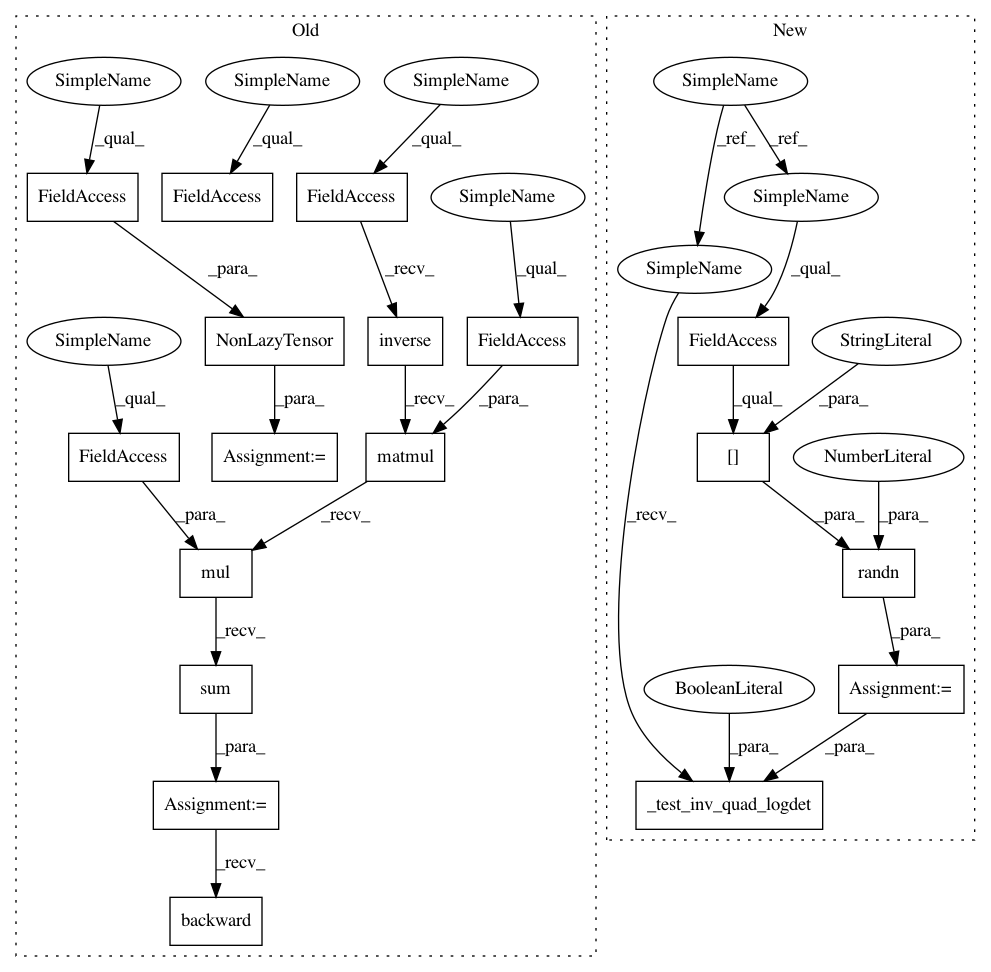

84fafd4599e29c68e63b90a38b56fcc65f289288,test/functions/test_inv_quad_log_det.py,TestInvQuadLogDetNonBatch,test_inv_quad_logdet_many_vectors_improper,#TestInvQuadLogDetNonBatch#,89
Before Change
def test_inv_quad_logdet_many_vectors_improper(self):
// Forward pass
actual_inv_quad = self.mat_clone.inverse().matmul(self.vecs_clone).mul(self.vecs_clone).sum()
actual_logdet = self.mat_clone.logdet()
with gpytorch.settings.num_trace_samples(1000), gpytorch.settings.skip_logdet_forward(True):
non_lazy_tsr = NonLazyTensor(self.mat)
res_inv_quad, res_logdet = non_lazy_tsr.inv_quad_logdet(inv_quad_rhs=self.vecs, logdet=True)
self.assertAlmostEqual(res_inv_quad.item(), actual_inv_quad.item(), places=1)
self.assertAlmostEqual(res_logdet.item(), torch.zeros(non_lazy_tsr.batch_shape), places=1)
// Backward
actual_inv_quad.backward()
actual_logdet.backward()
res_inv_quad.backward(retain_graph=True)
res_logdet.backward()
After Change
rhs = torch.randn(*self.matrix_shape[:-1], 5)
self._test_inv_quad_logdet(inv_quad_rhs=rhs, logdet=True)
def test_inv_quad_logdet_many_vectors_improper(self):
rhs = torch.randn(*self.matrix_shape[:-1], 5)
self._test_inv_quad_logdet(inv_quad_rhs=rhs, logdet=True, improper_logdet=True)
def test_inv_quad_only_many_vectors(self):
rhs = torch.randn(*self.matrix_shape[:-1], 5)
self._test_inv_quad_logdet(inv_quad_rhs=rhs, logdet=False)
In pattern: SUPERPATTERN
Frequency: 3
Non-data size: 18
Instances
Project Name: cornellius-gp/gpytorch
Commit Name: 84fafd4599e29c68e63b90a38b56fcc65f289288
Time: 2019-03-25
Author: gpleiss@gmail.com
File Name: test/functions/test_inv_quad_log_det.py
Class Name: TestInvQuadLogDetNonBatch
Method Name: test_inv_quad_logdet_many_vectors_improper
Project Name: cornellius-gp/gpytorch
Commit Name: 84fafd4599e29c68e63b90a38b56fcc65f289288
Time: 2019-03-25
Author: gpleiss@gmail.com
File Name: test/functions/test_inv_quad_log_det.py
Class Name: TestInvQuadLogDetNonBatch
Method Name: test_inv_quad_logdet_many_vectors
Project Name: cornellius-gp/gpytorch
Commit Name: 84fafd4599e29c68e63b90a38b56fcc65f289288
Time: 2019-03-25
Author: gpleiss@gmail.com
File Name: test/functions/test_inv_quad_log_det.py
Class Name: TestInvQuadLogDetNonBatch
Method Name: test_inv_quad_logdet_many_vectors_improper
Project Name: cornellius-gp/gpytorch
Commit Name: 84fafd4599e29c68e63b90a38b56fcc65f289288
Time: 2019-03-25
Author: gpleiss@gmail.com
File Name: test/functions/test_inv_quad_log_det.py
Class Name: TestInvQuadLogDetNonBatch
Method Name: test_inv_quad_only_many_vectors